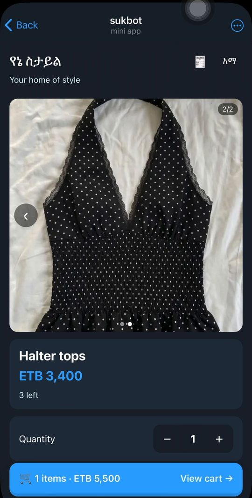
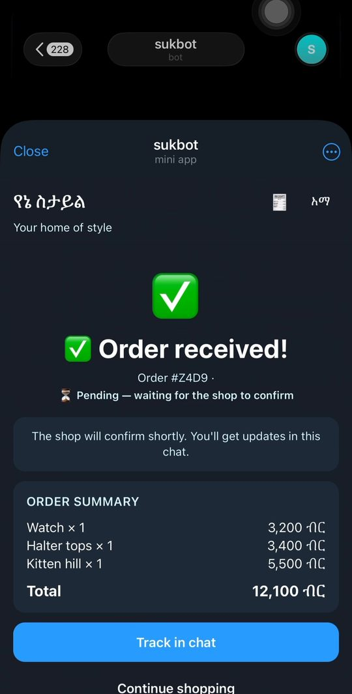
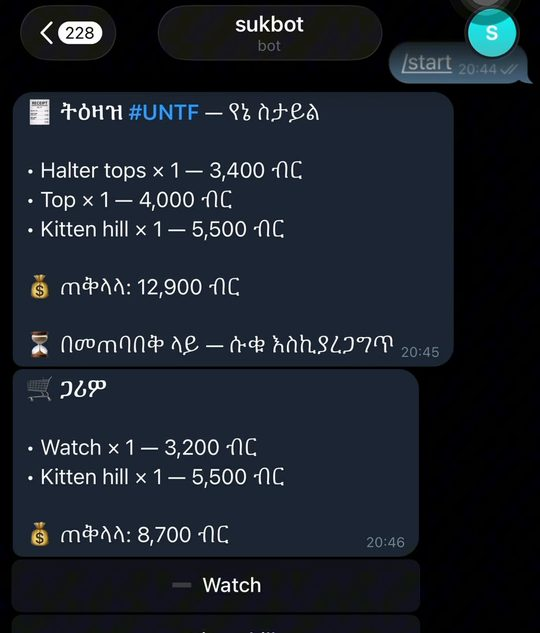
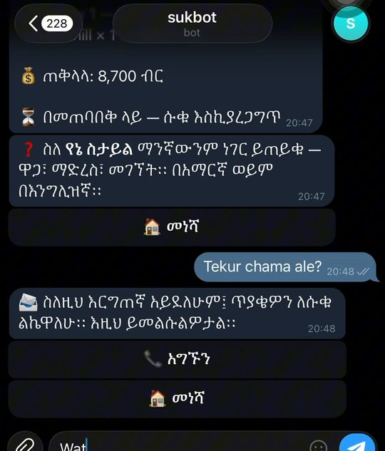
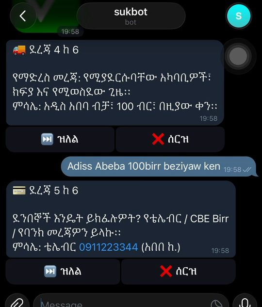
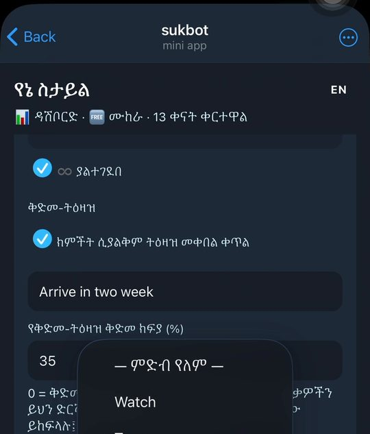

The problem
Most small sellers in Ethiopia already sell through Telegram channels and chats. But orders get lost between messages, prices are typed again and again, and customers wait hours for a reply.
A website or app is too expensive for them, and card payments are not an option for most customers.
The solution
ShopBot turns Telegram into a real shop. Owners set up a shop in chat in a few minutes and share one link. Customers browse a mini storefront inside Telegram, order, and pay on delivery or by bank transfer.
An AI assistant answers customer questions from that shop's own data, and hands anything it doesn't know to the owner.
How it works
Owner opens a shop in chat
A 5-step setup in Amharic or English: name, description, phone, delivery and payment details.Products in seconds
Send a photo with a caption like "Name - 1200" and the product is listed, with categories, stock and hide/show.Share one link or QR code
Customers open the shop's storefront right inside Telegram, with no app to install.Customers order and pay
Cart and checkout, pay on delivery or by transfer with a payment screenshot. The order status updates in their chat.Owner manages orders in chat
Each order arrives as a card with Confirm, Reject, On the way, Delivered and Call buttons.
Screenshots
From the Amharic demo. Phone numbers shown are test examples.






The AI assistant
- Answers in Amharic or English about price, stock, delivery and payment
- Uses only that shop's products and details, so it doesn't invent answers
- Forwards questions it can't answer to the owner
- Rate limits per customer, per shop and overall, to keep costs predictable
The business side
- 14-day free trial, then a monthly subscription in birr
- Owners pay by transfer and send a screenshot; admin approves
- Automatic expiry reminders 3 days before the end
- Admin tools: shops, approvals, stats and broadcasts
Built with
Every shop's data is kept separate, and the storefront checks each Telegram login before showing anything.
What I did
I designed and built ShopBot end to end and I run it: the bot and its order flows, the Mini App storefront, the AI assistant, payments and subscriptions, the admin tools, and deployment.
I build the same kind of thing for other businesses with n8n and AI: support bots, lead capture, daily reports and document processing. See my n8n workflows on GitHub.
Want something like this for your business?
Telegram or WhatsApp shops, AI assistants, and automations that save your team hours.
Hire me on UpworkAbout me